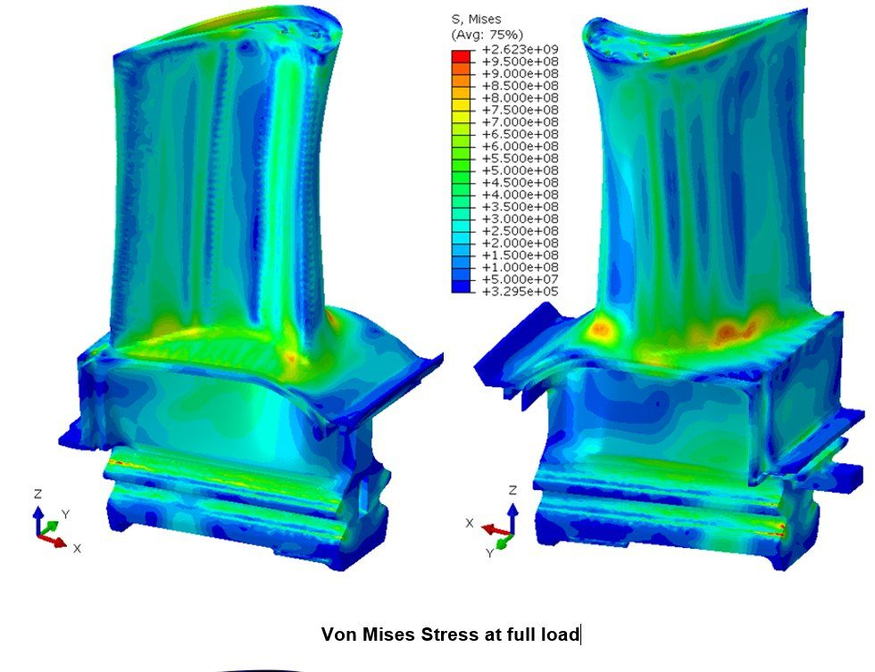
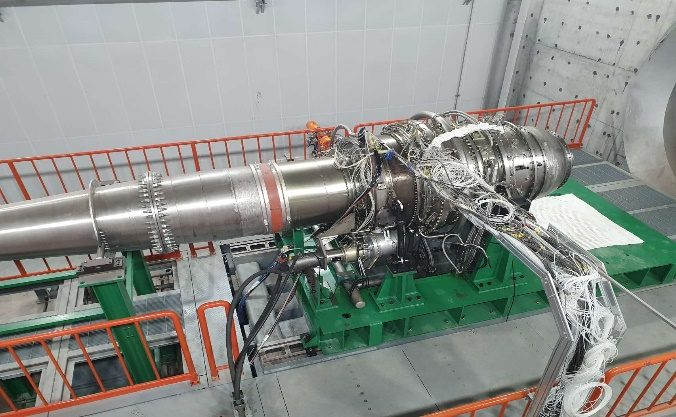
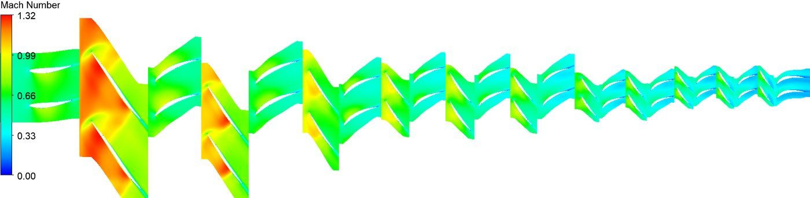
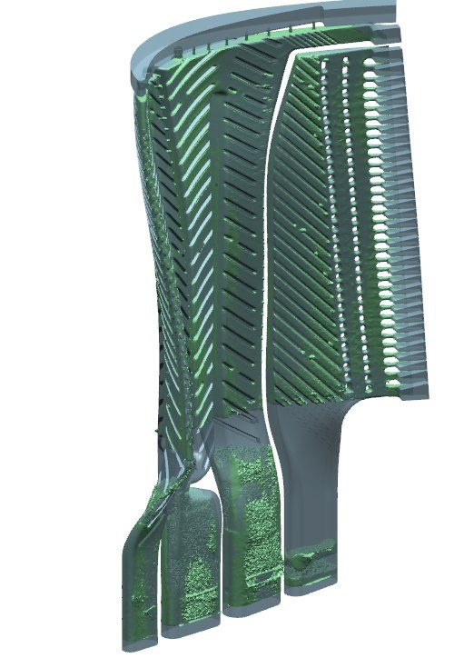
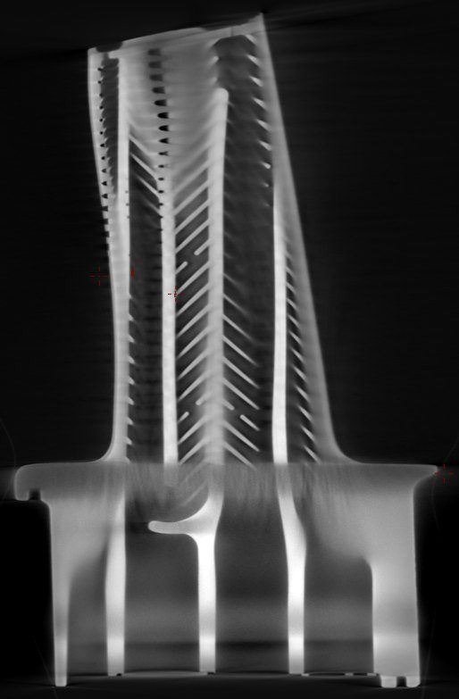
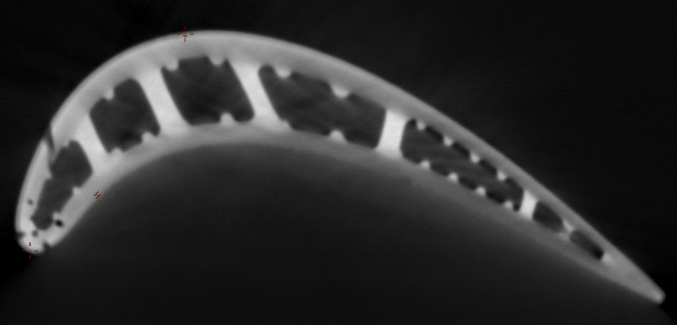
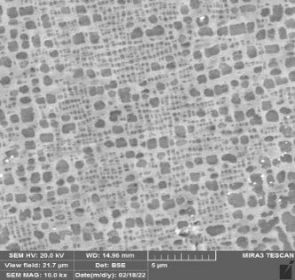
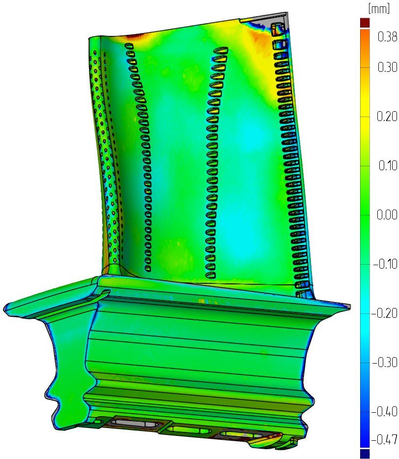
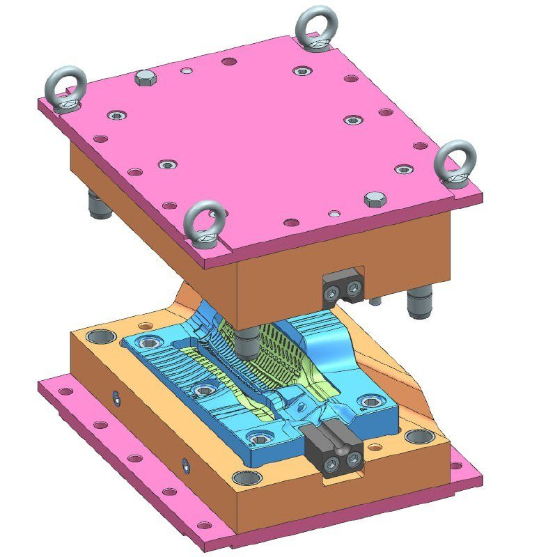

从微型燃气轮机到 75 MW 机组的研制
我们按研制合同开展燃气轮机机组及单个部件的研制，项目涵盖技术任务书、方案设计、详细设计文件、试验，直至在合作伙伴工厂实现投产。

团队已完成 10 MW 与 40 MW 机组的研制与试验
40 MW 工业燃气轮机为全新正向设计，全部计算和设计文件在一年内完成；首台样机整机试验于 2024 年底结束，功率 40.26 MW，简单循环效率 41.26%（ISO 工况），均高于设计指标。
团队能力覆盖从微型燃气轮机到 75 MW 的功率范围：简单循环与回热循环，单轴结构及带自由动力涡轮的双轴结构，以及发电和机械驱动用机组。

机组每个部分都由专业工程师负责
通流部分
热力循环、压气机与涡轮气动、流场数值模拟。成果：通流部分几何参数及机组在整个运行范围内的性能。
燃烧室
燃烧室方案与结构设计、燃烧与排放计算，针对天然气、掺氢燃料及低热值燃气选配燃烧器。
冷却
叶片与轮盘冷却系统、二次空气流路的空气分配，并为强度计算提供零部件温度。
强度与寿命
轮盘、叶片及机匣的应力应变分析，振动与转子动力学，确定使用寿命及大修间隔。
结构与设计文件
机组总体布置、三维模型，以及成套设计、工艺和修理技术文件。
材料与供应商
材料与涂层选用、铸造与机加工技术要求，为合作伙伴开展供应商资质鉴定。
试验
制定试验大纲，参与台架试验与整机试验，处理试验数据并改进设计。
压气机与辅助设备
轴流与离心压气机，以及与主机匹配的辅助设备。
计算、检测与工艺







从技术任务书到批产支持
技术任务书
机组用途、目标参数、燃料、场地条件、排放及寿命要求。
方案设计
循环与结构方案选择、初步总体布置、性能与成本估算。
详细设计
全套计算、三维建模、设计文件出图。
投产准备
制造工艺、工装、供应商资质鉴定，在合作伙伴工厂开展设计监督。
试验与改进
试验大纲、台架试验与整机试验，并根据试验结果修订技术文件。
批产支持
设计更改、使用与修理技术文件、售后服务支持。
告诉我们您的需求
首次沟通免费：通过一至两次通话了解项目内容与限制条件，随后提交包含工作范围、进度和费用的技术建议书。